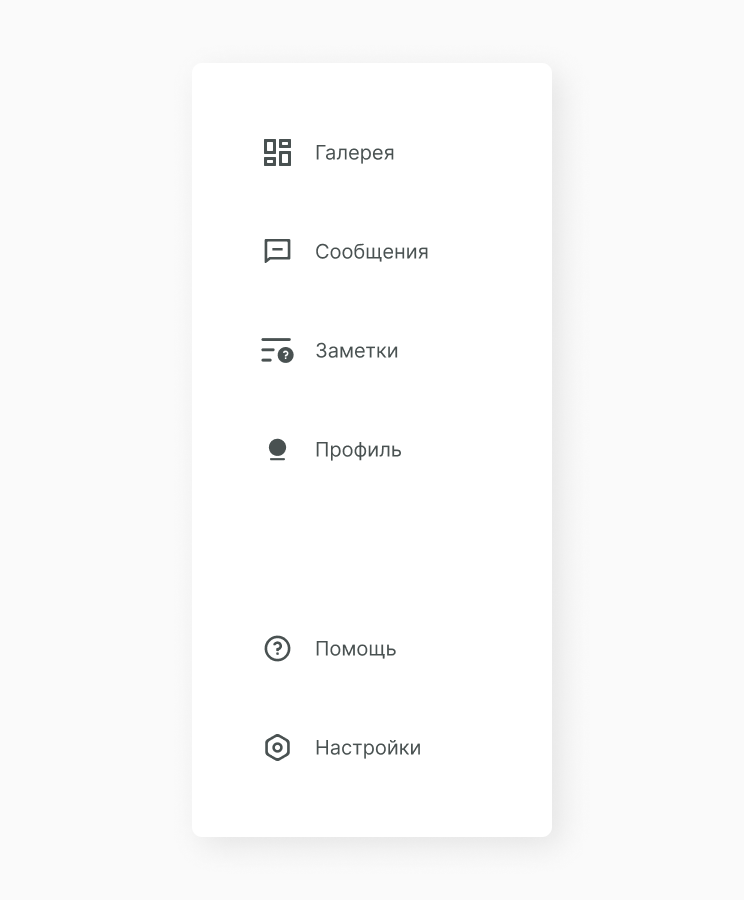
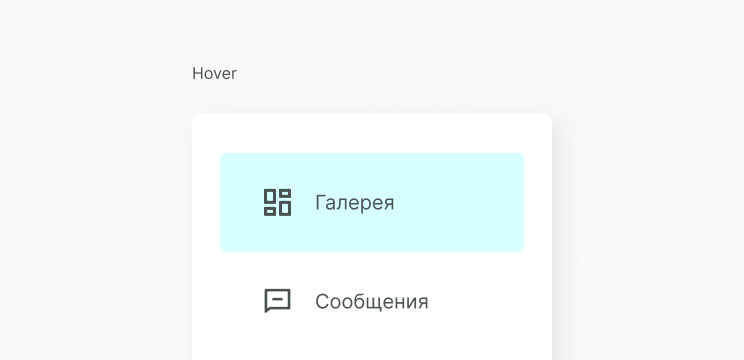
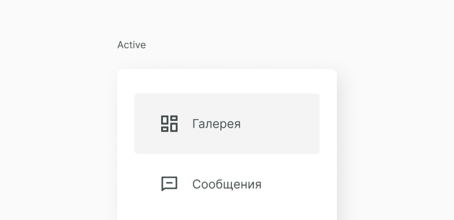

SideBarMenu
SideBarMenu отображает список вариантов доступных переходов на странице. Обычно это боковая панель, которая визуально разграничивает контент на странице. Благодаря этому элементу интерфейса посетители понимают принцип навигации.
Menu должно быть легко открывать, закрывать и взаимодействовать. Содержимое меню должно соответствовать потребностям пользователя. Пункты меню должно быть легко считывать и понимать, на какой имеено странице находится пользователь.
Структура компонента
Меню должно быть расположено относительно края экрана или браузера. Обычно оно появляются рядом (или перед) элементом, который их генерирует. Если оно находятся в положении, которое должно быть обрезано браузером или краем экрана, меню может отображаться слева, справа или над элементом, который его генерирует. Данное меню состоит из menu item, которые собраны в коллекцию.
Menu Item
Menu item может содержать в себе различные типы данных: иконку, текст, картинку, в зависимости от назначения. Подробнее о menu item.

Когда menu item собраны в коллекции, получаем следующий результат.
Состояние компонента
Исходя из структуры, мы можем выявить несколько состояний компонента при пользовательском действии.
 Реализация
Для начала создаем O_Menu.jsx. Прописывем функционал и собираем menu item в коллекции.
import React, { PureComponent } from 'react'
import A_MenuItem from '../../atoms/A_MenuItem/A_MenuItem.jsx'
import './O_Menu.css'
export default class O_Menu extends PureComponent {
constructor(props) {
super(props)
}
render() {
const { menu } = this.props
const { top, bottom } = menu
const topMenuElements = []
const bottomMenuElements = []
top.forEach((item, i) => {
topMenuElements.push(<A_MenuItem {...item} key={'top' + i} />)
})
bottom.forEach((item, i) => {
bottomMenuElements.push(<A_MenuItem {...item} key={'bottom' + i} />)
})
return (
<div className="O_Menu">
<div className="C_MenuItems"v>{topMenuElements}</div>
<div className="C_MenuItems"v>{bottomMenuElements}</div>
</div>
)
}
}По принципу изоляции прописываем стили.
.O_Menu {
width: 360px;
padding: 40px 28px;
box-shadow: 9px 9px 35px rgba(0, 0, 0, 0.09);
border-radius: 10px;
}
.O_Menu .C_MenuItems {
display: flex;
flex-direction: column;
}
.O_Menu .C_MenuItems:last-child {
margin-top: 100px;
}В файле сборщика заполняем массивы top и botton и выводим компонент.
import React from 'react'
import ReactDOM from 'react-dom'
import O_Menu from '../../components/organisms/O_Menu/O_Menu.jsx'
const menu = {
top: [
{
text: 'Галерея',
icon: 'dashboard',
url: 'https://codetutorial.adc.ac'
},
{
text: 'Сообщения',
icon: 'messages',
url: 'https://codetutorial.adc.ac'
// active: true
},
{
text: 'Заметки',
icon: 'pages',
url: 'https://codetutorial.adc.ac'
},
{
text: 'Профиль',
icon: 'user',
url: 'https://codetutorial.adc.ac'
}
],
bottom: [
{
text: 'Помощь',
icon: 'help',
url: 'https://codetutorial.adc.ac'
},
{
text: 'Настройки',
icon: 'settings',
url: 'https://codetutorial.adc.ac'
}
]
}
document.addEventListener('DOMContentLoaded', () => {
ReactDOM.render(
<O_Menu menu={menu} />,
document.body.appendChild(document.createElement('div'))
)
})Получаем следующий результат:
Ссылки
Также для тебя ссылки на Figma с дизайн системой и GitHub с библиотекой компонентов.
Составляющие
В этот компонент часто выводятся следующие компоненты.